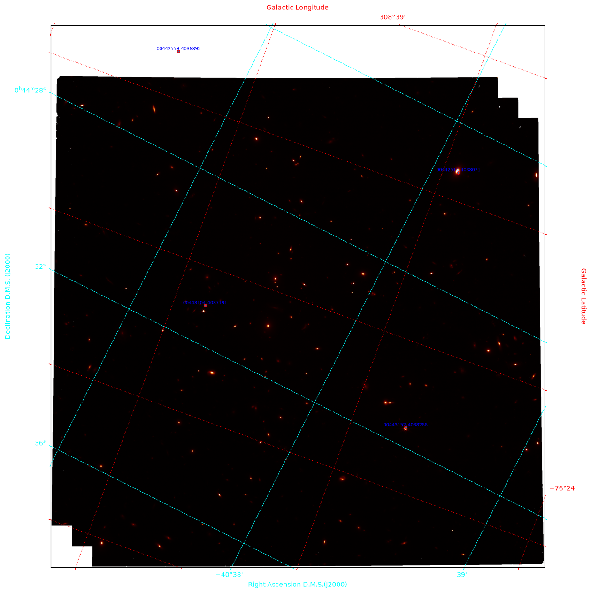

Retrieving MAST images and overlaying Gaia/Vizier sources on them#
Learning Goals#
Downloading astronomical images via the MAST API by querying with criteria and region
Querying Gaia and Vizier catalogs around the image regions
Plotting the image and overlaying catalog object locations in the same figure
Keywords#
astroquery, coordinates, wcs, Vizier, matplotlib
Summary#
This tutorial utilizes the MAST API to filter and query different parts of the sky and download the related image products. Then, it retrieves World Coordinate System (WCS) information from the downloaded products and provides these as inputs for catalog queries. After this step, Gaia (or any Vizier catalog) is queried according to a rectangle specified to either focus on a part of the image, span the image, or put the image in a wider context of cataloged objects. Finally, both the image and catalog sources will be plotted on the same figure.
Imports#
In this tutorial we will use both image raster products as backgrounds, and point vector products to overlay cataloged celestial objects over these images. Both data will be retrieved using the astroquery library.
astroquery.mastwill let us access the Mikulski Archive for Space Telescopes (MAST) database.astroquery.gaiawill be used to retrieve information and data from Gaia data releases.astroquery.vizierwill permit access to the catalogs from VizieR.
For the image/raster downloading part astroquery.mast.Observations will enable us to download images from MAST.
from astroquery.mast import (
Observations,
) # Downloading observations/images from MAST via astroquery
from astroquery.gaia import Gaia # To Query Gaia data releases
from astroquery.vizier import Vizier # To query catalogs in VizieR
from astropy.wcs import WCS # World Coordinate System wrapper and manipulator
from astropy.io import fits # FITS file opener, knowledge extractor and manipulator
from astropy.coordinates import SkyCoord # Celestial coordinate repr. interface
import astropy.units as u # ensuring standard unit to represent custom lengths
import matplotlib.pyplot as plt # plotting
Querying and downloading MAST Data#
This command gives the full list of available missions in the MAST API.
print(Observations.list_missions())
['BEFS', 'EUVE', 'FIMS-SPEAR', 'FUSE', 'GALEX', 'HLA', 'HLSP', 'HST', 'HUT', 'IUE', 'JWST', 'K2', 'K2FFI', 'Kepler', 'KeplerFFI', 'OPO', 'PS1', 'SDSS', 'SPITZER_SHA', 'SWIFT', 'TESS', 'TUES', 'WUPPE']
Observation.query_criteria() allows querying both by a variety of criteria, and also with lists of coordinates via s_dec and s_ra.
See this page for the full list of filtering parameters.
obs_table = Observations.query_criteria(
dataproduct_type=["image"],
obs_collection=["JWST"],
s_dec=[-45.55, -40.45],
s_ra=[10.0, 20.0],
)
After querying the MAST database and obtaining an observation table, there are several things that can be done. The first one is listing the available products get_product_list().
products_by_obs = Observations.get_product_list(obs_table)
print(products_by_obs)
obsID obs_collection dataproduct_type ... calib_level filters
--------- -------------- ---------------- ... ----------- ------------
228645278 JWST image ... 1 OPAQUE;G235M
228645278 JWST image ... 2 OPAQUE;G235M
228645278 JWST image ... 2 OPAQUE;G235M
228645278 JWST image ... 1 OPAQUE;G235M
228645278 JWST image ... 2 OPAQUE;G235M
228645278 JWST image ... 2 OPAQUE;G235M
228645278 JWST image ... 2 OPAQUE;G235M
228645278 JWST image ... 2 OPAQUE;G235M
228645278 JWST image ... 2 OPAQUE;G235M
228645278 JWST image ... 2 OPAQUE;G235M
... ... ... ... ... ...
228686637 JWST image ... 2 F150W2
228686637 JWST image ... 2 F150W2
228686637 JWST image ... 2 F150W2
228686637 JWST image ... 2 F150W2
228686637 JWST image ... 2 F150W2
228686637 JWST image ... 2 F150W2
228686637 JWST image ... 2 F150W2
228686637 JWST image ... 2 F150W2
228686637 JWST image ... 2 F150W2
228686637 JWST image ... 1 F150W2
Length = 784 rows
Since this is a demo, a specific obsID is given below to increase reproducibility, but general filtering can be done without it.
prods = Observations.filter_products(
products_by_obs,
calib_level=[3],
productType=["SCIENCE"],
extension="fits",
obsID=["228645392"],
)
print(prods)
obsID obs_collection dataproduct_type ... dataRights calib_level filters
--------- -------------- ---------------- ... ---------- ----------- -------
228645392 JWST image ... PUBLIC 3 F322W2
Dowloading the data products
manifest = Observations.download_products(prods[0])
print(manifest)
Downloading URL https://mast.stsci.edu/api/v0.1/Download/file?uri=mast:JWST/product/jw05594-o145_t147_nircam_clear-f322w2_i2d.fits to ./mastDownload/JWST/jw05594-o145_t147_nircam_clear-f322w2/jw05594-o145_t147_nircam_clear-f322w2_i2d.fits ...
[Done]
Local Path ...
-------------------------------------------------------------------------------------------------------- ...
./mastDownload/JWST/jw05594-o145_t147_nircam_clear-f322w2/jw05594-o145_t147_nircam_clear-f322w2_i2d.fits ...
Opening the FITS file
fits_file = manifest["Local Path"][0]
print(fits_file)
./mastDownload/JWST/jw05594-o145_t147_nircam_clear-f322w2/jw05594-o145_t147_nircam_clear-f322w2_i2d.fits
The data of interest is usually in hdu['SCI'].data. For example, in JWST and HST files,
hdu[1].header will have WCS information, which can be retrieved via astropy.wcs.WCS(hdu[1].header).
We open the FITS file via “with” to ensure its closure after extracting the data and info.
with fits.open(fits_file, ignore_missing_simple=True) as hdu:
image_data = hdu["SCI"].data # this is a numpy nd array
wcs_helix = WCS(hdu[1].header) # WCS object from FITS
WARNING: FITSFixedWarning: 'datfix' made the change 'Set DATE-BEG to '2024-08-19T21:42:49.503' from MJD-BEG.
Set DATE-AVG to '2024-08-19T22:01:42.243' from MJD-AVG.
Set DATE-END to '2024-08-19T22:20:35.004' from MJD-END'. [astropy.wcs.wcs]
WARNING: FITSFixedWarning: 'obsfix' made the change 'Set OBSGEO-L to -60.450781 from OBSGEO-[XYZ].
Set OBSGEO-B to -21.231906 from OBSGEO-[XYZ].
Set OBSGEO-H to 1501193284.090 from OBSGEO-[XYZ]'. [astropy.wcs.wcs]
Now we have the image on which we will overplot sources, and the WCS information we need to for our catalog query.
Working with Celestial Coordinates#
Important general keywords:#
pixel: part of a detector corresponding to a real 2D area
voxel: A 3D counterpart of pixel, indicating "volume"
spaxel: spatial or spectral pixel
WCS keywords:#
CRVALn: Actual coordinate of the information present in the pixel/voxel
CRPIXn: Location in terms of pixel order, CRPIX1=1 and CRPIX2=1 represents the reference in a 2D image
CDELTn: Delta (coordinate difference) of distance from one pixel to its neighbor
CTYPEn: Eight-char string for axis type, e.g., 'RA---TAN' 'DEC--TAN'
CUNITn: String for unit, default is degree
NAXISn: Number of pixels in each axes
Tip: crval[0] and crval[1] give the reference coordinates of the FITS file.
Querying catalogs according to the FITS file coordinate span#
From the WCS object retrieved from the FITS file, a
SkyCoordobject will be constructed with the central values of the image.Then, a rectangular shape will be formed around this coordinate with a set width and height using
u.Quantityandu.degThe query will be realized for this rectangle.
coord = SkyCoord(
ra=wcs_helix.wcs.crval[0], dec=wcs_helix.wcs.crval[1], unit="deg", frame="icrs"
)
exp_coeff = 0.4 # A multiplier of width and height for querying, either focusing on the image's specific part or putting the image on the big picture
width = u.Quantity(0.1 * exp_coeff, u.deg)
height = u.Quantity(0.1 * exp_coeff, u.deg)
Gaia vs. Vizier queries
Gaia can be queried directly with the
astroquery.gaia.Gaia class.Vizier catalogs are queried using
astroquery.vizier.Vizierand specifying thecatalogparameter (the list of valid catalog IDs can be found here).
Here we first query Gaia, and then use Vizier to query the 2MASS All-Sky Catalog.
print("|||| ---- |||| Querying GAIA Data Release III |||| ---- ||||")
# Default GAIA data source, Gaia.MAIN_GAIA_TABLE, is Gaia DR III.
r = Gaia.query_object_async(coordinate=coord, width=width, height=height)
r.pprint(max_lines=12, max_width=130)
|||| ---- |||| Querying GAIA Data Release III |||| ---- ||||
INFO: Query finished. [astroquery.utils.tap.core]
dist solution_id designation ... ebpminrp_gspphot_upper libname_gspphot
... mag
-------------------- ------------------- ---------------------------- ... ---------------------- ---------------
0.007692799322871855 1636148068921376768 Gaia DR3 4999122236377601536 ... 0.003 PHOENIX
0.010848236402377906 1636148068921376768 Gaia DR3 4999122240672495616 ... --
0.012029608873224518 1636148068921376768 Gaia DR3 4999122068873902208 ... 0.0026 MARCS
0.02376041624304681 1636148068921376768 Gaia DR3 4999122339456817792 ... --
print("|||| ---- |||| Querying VizieR Catalogs |||| ---- ||||")
catalog_2mass = "II/246/out"
Vizier.ROW_LIMIT = -1 # alters the 50 rows default limit
r2 = Vizier.query_region(coord, width=width, catalog=catalog_2mass)
print(r2)
print(
r2[catalog_2mass].columns
) # printing column names to later use it in the following cell
|||| ---- |||| Querying VizieR Catalogs |||| ---- ||||
TableList with 1 tables:
'0:II/246/out' with 15 column(s) and 4 row(s)
<TableColumns names=('RAJ2000','DEJ2000','2MASS','Jmag','e_Jmag','Hmag','e_Hmag','Kmag','e_Kmag','Qflg','Rflg','Bflg','Cflg','Xflg','Aflg')>
Now we pull the catalog data columns we need to overlay them onto our image, using our 2MASS catalog result.
RAJ2000 is Right Ascension for J2000 in equatorial coordinates,
degree.decimalDEJ2000 is Declination for J2000 in equatorial coordinates,
degree.decimal
Note: Column names can differ from catalog to catalog.
ralist = r2[catalog_2mass]["RAJ2000"]
declist = r2[catalog_2mass]["DEJ2000"]
names = r2[catalog_2mass]["2MASS"]
Overplotting sources onto the image#
Below is the last part where the image is plotted, two different coordinate systems are overlayed, and catalog object coordinates with their IDs are scattered on top of the image.
We can take advantage of different axis objects on a single figure using matplotlib.plt.subplot(projection="") which permits the use of multiple coordinate frames on the same plot.
plt.figure(figsize=(15, 15))
ax = plt.subplot(projection=wcs_helix) # subplot with specific projection
# Showing the image
ax.imshow(image_data, origin="lower", cmap="afmhot", vmax=6)
ax.set_xlabel("Right Ascension D.M.S.(J2000)", color="cyan")
ax.set_ylabel("Declination D.M.S. (J2000)", color="cyan")
ax.grid(color="cyan", ls="dashed")
ax.tick_params(axis="both", color="cyan", labelcolor="cyan")
# Overlaying galactic coordinates on counter axes
overlay = ax.get_coords_overlay("galactic")
overlay.grid(color="red", ls="dotted")
overlay[0].set_axislabel("Galactic Longitude", color="red")
overlay[1].set_axislabel("Galactic Latitude", color="red")
overlay[0].set_ticks(color="red")
overlay[1].set_ticks(color="red")
overlay[0].set_ticklabel(color="red")
overlay[1].set_ticklabel(color="red")
# The following line puts objects in the selected catalogs on image
ax.scatter(ralist, declist, transform=ax.get_transform("icrs"), s=15, edgecolor="red")
# The following line put name labels on catalog objects drawn on the figure zipping three lists, RA, DEC coordinates, and IDs,
# then pulling them one by one with a for loop allows scattering them on the plot directly.
# va is vertical alignment of the label, and ha is horizontal
# ax.get_transform('icrs') permits coinciding the coordinate systems of the Figure and scatter plots
for xi, yi, ni in zip(ralist, declist, names):
plt.text(
xi,
yi,
ni,
va="bottom",
ha="center",
fontsize=7,
color="blue",
transform=ax.get_transform("icrs"),
)
plt.show()
